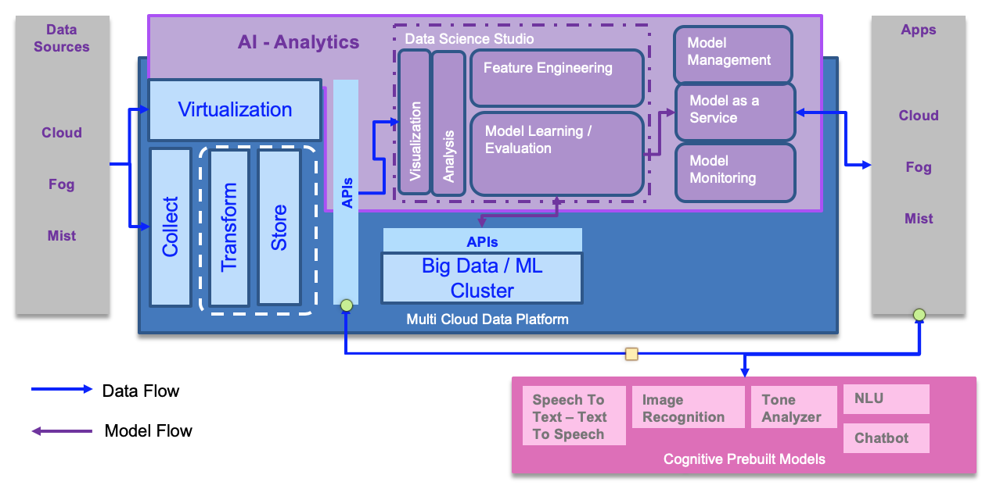
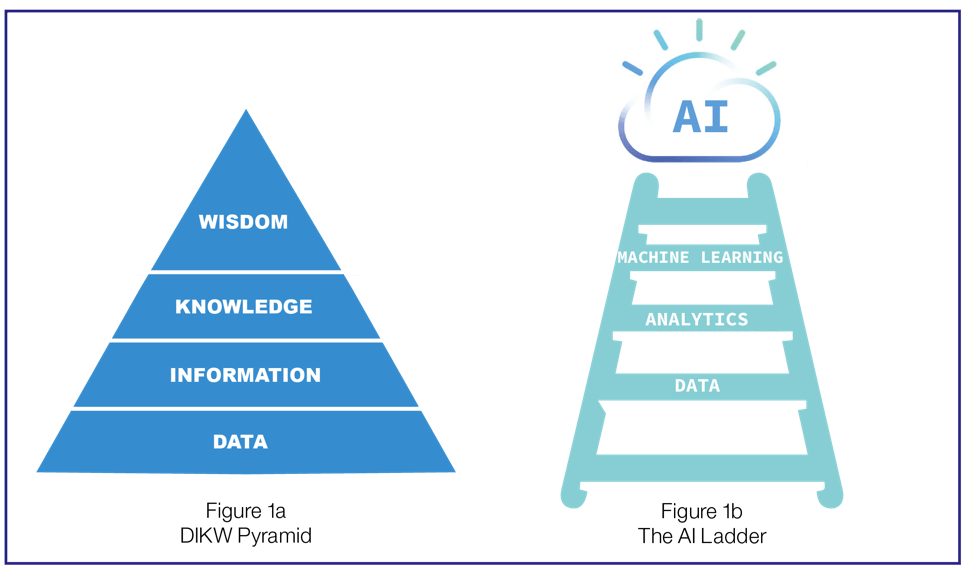

Data - AI - Analytics Reference Architecture
Abstract
In this reference architecture, we are focusing on defining architecture patterns and best practices to build data and AI intensive applications. We are addressing how to integrate data governance, machine learning practices and the full life cycle of a cloud native solution development under the same reference architecture to present a holistic point of view on how to do it.
When we consider development of Data and AI intensive applications or intelligent Application it is helpful to think of how the combination of three underlying architecture patterns
- Cloud Native application architecture patterns
- Data architecture patterns
- AI architecture patterns
provides the right foundation to enable us to develop these intelligent applications in a highly agile cloud native way.
By considering the nature of joins between the architectures we can also understand how the different roles such as Software Engineer, Data Engineer, and Data Scientist relate and work together in the development of such solutions.
The following diagram illustrates the top-level view of a Data centric and AI reference architecture. There is no argument about it, AI without Data will not exist. The architecture illustrates the need for strong data management capabilities inside a 'data platform', on which AI capabilities are plugged in.

The data platform addresses the data collection and transformation to move data to local highly scalable store. Sometime, it is necessary to avoid moving data when there is no need to do transformations or no performance impact to the data sources by adding readers, so a virtualization capability is necessary to open a view on remote data sources. On the AI side, data scientists need to perform data analysis, which includes making sense of the data using data visualization. To build a model they need to define features, and the AI environment supports feature engineering. Then to build the model, the development environment helps to select and combine the different algorithms and to tune the hyper parameters. The execution can be done on local cluster or can be executed, at the big data scale level, to machine learning cluster.
Once the model provides acceptable accuracy level, it can be published as a service. The model management capability supports the meta-data definition and the life cycle management of the model. When the model is deployed, monitoring capability, ensures the model is still accurate and even not biased.
The intelligent application on the right side, can run on cloud, fog, or mist. It accesses the deployed model, access Data using APIs, and even consumes pre-built models, congitive services, like a speech to text and text to speech service, an image recognition, a tone analyzer services, the Natural Language Understanding (NLU), and chatbot.
Data is fundamental
What makes managing data so challenging and complex is that, by itself, data doesn't do anything. Data is inert; it is not self-organizing or even self-understanding. In the DIKW pyramid, data is the base with the least amount of perceived usefulness. Information has higher value than data, knowledge has higher value than information, and wisdom has the highest perceived value of all. Data requires something else—a program, a machine, or even a person—to move up the value chain and become information.

The IBM AI Ladder also begins with data. You get higher business value when you perform business-assisted functions such as analytics, machine learning, or artificial intelligence on top of the data.
Data as a differentiator
Your data needs to become a corporate asset. Data has the power to transform your organization, add monetary value, and enable your workforce to accomplish extraordinary things. Data-driven cultures can realize higher business returns.
The scale of preserved data across a complex hybrid cloud topology requires discipline, even for an organization that embraces agile and adaptive philosophies.
Data can and should be used to drive analytical insights. But what considerations and planning activities are required to enable the generation of insights, the ability to take action, and the courage to make decisions? Although the planning and implementation activities to maximize the usefulness of your data can require some deep thinking, your organization can become data-centric and data-driven in a short time.
Businesses need to move rapidly. Your organization must respond to changing needs as quickly as possible or risk becoming irrelevant. This applies to both private or public organizations, whether large or small.
Data and the related analytics are key to differentiation, but traditional approaches are often ad hoc, naive, complex, difficult, and brittle. This can result in delays, business challenges, lost opportunities, and the rise of unauthorized projects.
Data platform
Principles
- There is a spectrum from single source of the truth to data hyper personalisation . Fundamentally we need to embrace the fact that different roles need specialised data stores with redundancy and replication between them Exercise specialisation through connectivity
- Different application patterns apply different data specialisation.
- There is a clear dependency between AI and Data management, but for an intelligent application context there are a Data concern, a AI model management concern, a multi cloud deployment concerns.
- As you constrain scalability and network connectivity you also constrain data store, data structure and data access.
- The value and way of storing and representing data may change with its age. Value also comes in the recognition of patterns in the time series.
Collect, organize, and analyze data
Today, our users may have access to terabytes, petabytes, or even exabytes of data. But if that data is not collected, organized, managed, controlled, enriched, governed, measured, and analyzed, that data is not just useless—it can become a liability.
These activities form the focus of data and analytics platforms, as shown in the three pillars of IBM Analytics offerings:
- Hybrid Data Management
- Collect all types of data, structured and unstructured
- Include all open sources of data
- Single platform with a commonf application layer
- Write once and deploy anywhere
- Unified Governance and Integration
- Satisfy all matters of finding, cataloging and masking data
- Integrate fluid data sets
- Deliver built-in compliance
- Leverage advanced machine learning capabilities
- Data Science and Business Analytics
- Deliver descriptive, prescriptive and predictive insights across all types of data
- Enable advanced analytics and data science methods
Making data enabled and active
There are five key tenets to making data enabled and active:
- Developing a data strategy
- Developing a data architecture
- Developing a data topology for analytics
- Developing an approach to unified governance
- Developing an approach to maximizing the accessibility of data consumption
If data is an enabler, then analytics can be considered one of the core capabilities that is being enabled.
Analytics can be a complex and involved discipline that encompasses a broad and diverse set of tools, methods, and techniques. One end of the IBM AI Ladder is enabled through data in a static format such as a pre-built report; the other end is enabled through deep-learning and advanced artificial intelligence. Between these two ends, the enablement methods include diagnostic analytics, machine learning, statistics, qualitative analysis, cognitive analysis, and more. A robot, a software interface, or a human may need to apply multiple techniques within a single task or across the role that they perform in driving insight, taking action, monitoring, and making decisions.